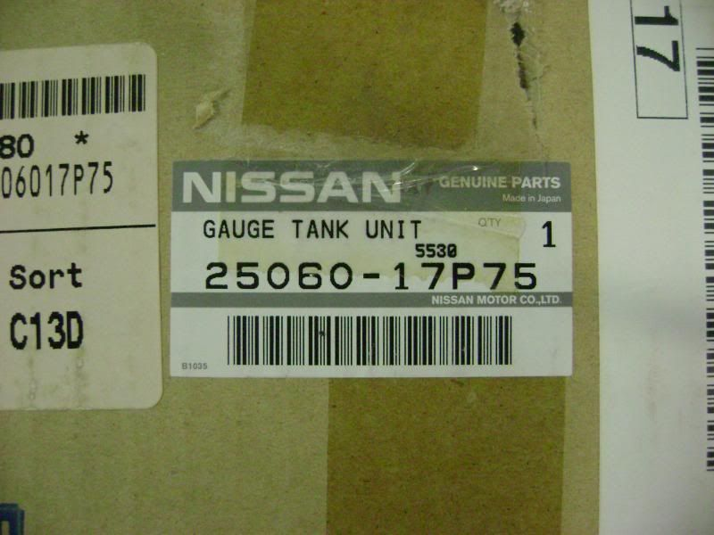
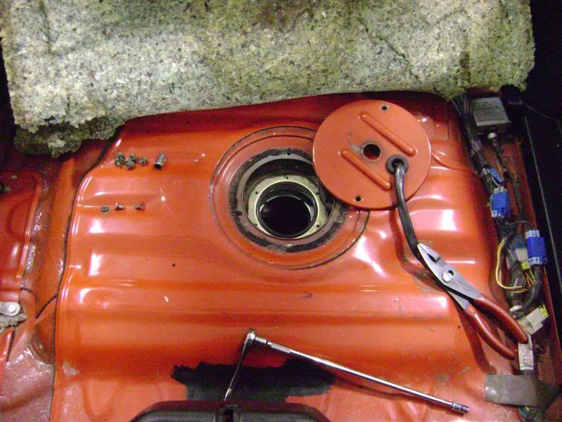
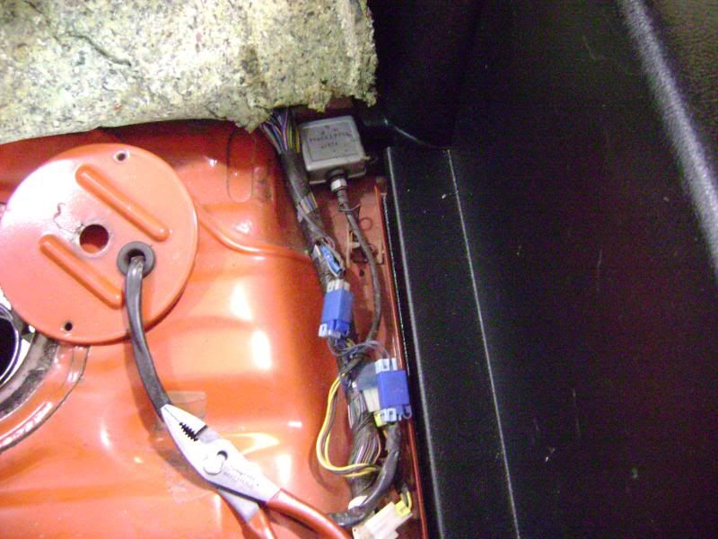
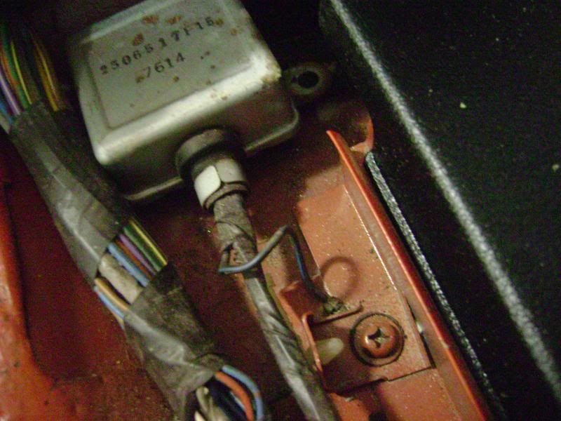
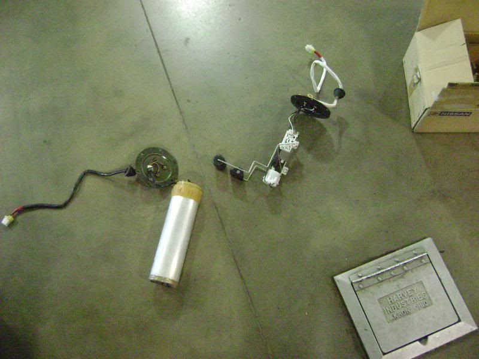
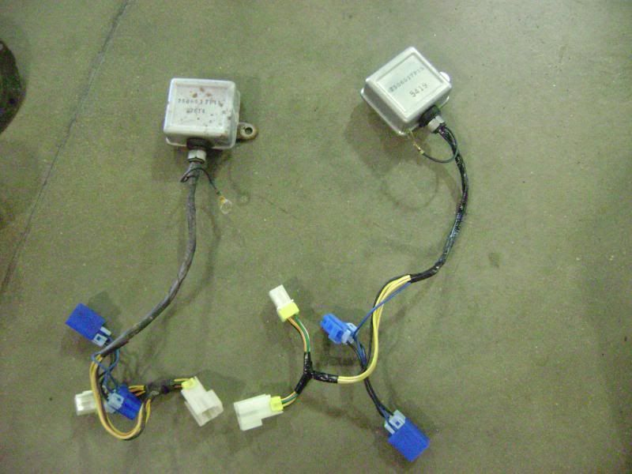
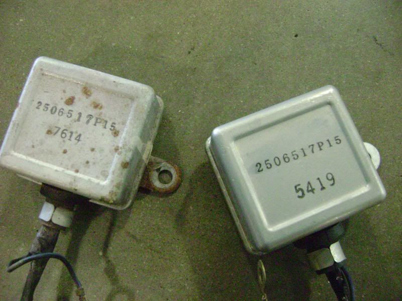
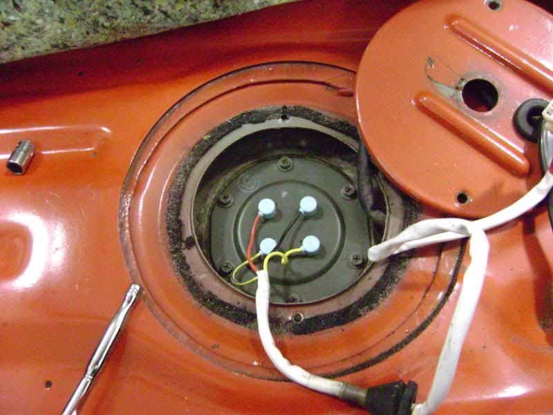
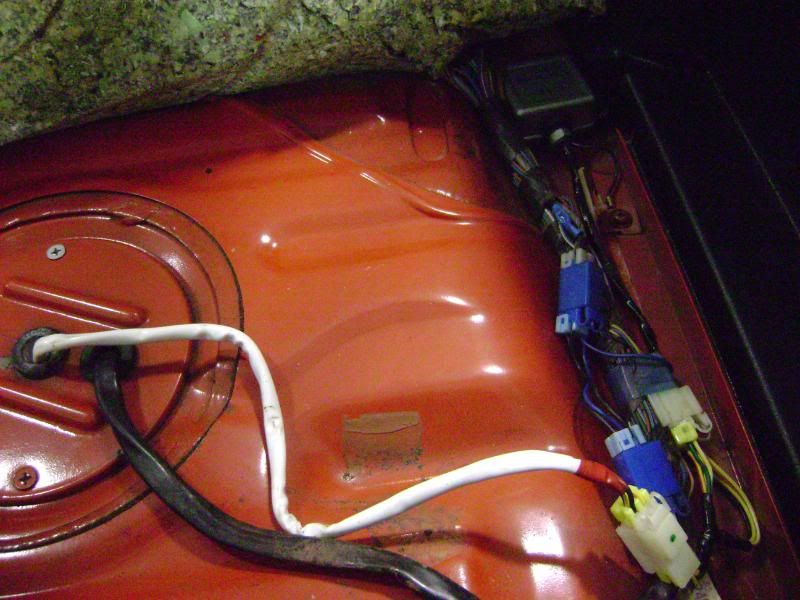
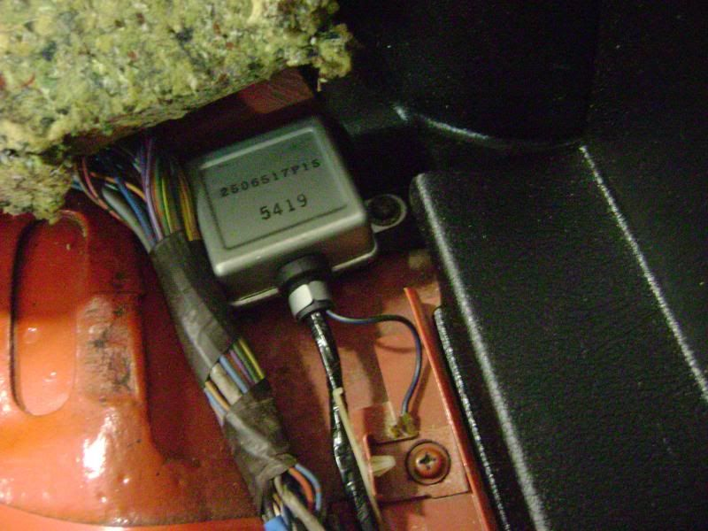

-
This How To is for people with digital dash whose fuel level gauge has erratic or erronious readings. This erratic reading will also affect Distance to Empty (DTE) and in some cases Bitching Betty saying "Warning, Low Fuel".
This How To will also work for analog dash cars.
Nissan has an updated part for the fuel level sending units of the Z31. The original units were of a canister or barrel style system with an internally guided float. Over the years, the potentiometer portion of the sending units gets corroded and wildly affects the resistance of the unit, thereby giving inaccurate readings.
For digital dash cars you will need to order this part from your Nissan place of choice.
25060-17P75

For analog dash cars you will need to order this part from your Nissan place of choice.
25060-17P65
NOTE Analog dash cars may not have the silver box. It has been reported that some digital dash cars do not have the silver box. The new kit will include the silver box for digital dash cars and includes the integral jumper harness. If your car does not originally have the silver box and the new kit has one, install it as shown in the steps below.
1 First step is to disconnect the negative battery terminal.
2 Open the hatch and lift up the rear carpet. Then remove the tool kit and fold back the foam padding.
3 You will see a big round plate with 2 Phillips screws. Remove these and lift up round plate.
4 The sending unit is directly under the plate. Follow the black wire harness that comes out of the left side of the round plate to where the connectors are and disconnect the blue and white connectors. Push the harness grommet thru the plate and feed the harness thru. Then remove the six 8mm bolts. Take a set of pliers and grab the top of the sending unit and pull straight up with a slight twisting motion and set on the ground.

5 Locate the silver box and remove the Phillips screw holding the box and the Phillips screw holding the ground wire.


6 Now set the old and new components on the ground and compare.
Old on left, new on right.



As you see, the sending units are very different. Do not be alarmed. The new design is far more superior than the original design. The silver boxes on the other hand are the same (at least in my case). Replace the silver box regardless.
7 Now install the new sending unit very very carefully. DO NOT BEND THE FLOAT ARMS!!! If you do, the accuracy of the sending unit will be affected. It may take a few tries to get it in the hole. Do not force it. Once you get it in, make sure the float arms are pointing to the left side of the car. It will look like this when oriented correctly, note wire colors. Then feed the new white harness thru the plate hole and install the grommet to the plate. Reinstall the plate with the 2 flat headed Phillips screws.

8 Now install new silver black box. Be sure to correctly put the ground wire eyelet back on like original. Connect the connectors. They will only go in one way, so don't worry.


9 Now reinstall the foam padding, tool kit, and rear carpet and shut the hatch.
10 Reconnect the negative battery terminal. Turn on car and make sure the gauge works properly. Go drive and have fun.
1986 300ZX Turbo…sold
1990 Skyline GT-R…new money pit
2014 Juke Nismo RS 6-speed…daily -
Excellent. Does the silver box come with the new sending unit? Or is it a separate ordeal, and does it NEED to be replaced with the float assembly?Someone buy my mustang so I can get another zx… -
Comes with the sending unit.
1986 300ZX Turbo…sold
1990 Skyline GT-R…new money pit
2014 Juke Nismo RS 6-speed…daily -
Sweet.Someone buy my mustang so I can get another zx… -
Analog dash cars don't have the silver box....hell, I can't even remember my 86NA having it and it was digi dash......it may have though, but the analog dash definitely doesn't, was just digging back there in my 84 not 4 hours ago.- VG30DET (HE341) 86 300ZX - 1982 280ZX Turbo - Headered NA 1986 300ZX 2+2 - 2000 Xterra - -
Noted and edited in first post.
1986 300ZX Turbo…sold
1990 Skyline GT-R…new money pit
2014 Juke Nismo RS 6-speed…daily -
I just ordered the revised unit for analog dash. Will report on it when it arrives.
1985 Nissan 300ZX 2+2- My first Z, back in the family
1987 Nissan 300ZX Turbo RIP 4/87 - 4/28/2011
Under Construction: 1986 Nissan 300ZX NA2T Slicktop
Originally posted by Tempestas -
How much does the new unit cost? -
im curious where u guys are getting them and cost? my analog is very sketchy on when it works.Even with tha new cluster so it has to be the sender86 NA
87 Turbo
Member of the "zetto sun-ichi" group
Local MN car forum/club anyone welcome..... fivezeroseven.net join! -
http://www.courtesyparts.com
http://www.trademotion.com/partlocat…85&catalogid=1
84-86 only though
http://www.300zxpartsforyou
How can you guys not find them? They're everywhere!'85 z31 stock -
thanks! I also noticed he posted the numbers in the top too FAIL on my part for not reading it very well.86 NA
87 Turbo
Member of the "zetto sun-ichi" group
Local MN car forum/club anyone welcome..... fivezeroseven.net join! -
I'm having this same problem so I read through a couple of threads. One question I have though is if there is a diffence between the NA/T units or if they're all the same (for all years 84-89) with the exception being the digital/analog dash of course. Found this @ Courtesy Parts: http://www.courtesyparts.com/25060-a…ml?cPath=2317&. Only thing is that it doesn't list my year as one of the supported options (1988 NA). -
Only difference is digital or analog gauges. All digital supercede to the same part number for digital. All analog supercede to same part number for analog.
1986 300ZX Turbo…sold
1990 Skyline GT-R…new money pit
2014 Juke Nismo RS 6-speed…daily -
Thanks, appreciate it!NissanEgg wrote: Only difference is digital or analog gauges. All digital supercede to the same part number for digital. All analog supercede to same part number for analog. -
Thanks for the help.

Copyright © 2006–. All rights reserved. Privacy Policy